|
Boolean operations
In this tutorial we look at Boolean operations (name derives
from George Boole, a mathematician). If you have previous experience on
some 3D-software, you are probably acquainted with Booleans already. For
a first timer this might sound a bit intimidating, but the concept is a
very simple one.
There are three main operations. Union and subtraction
are, in simple terms, just about adding pieces to objects or taking away
pieces from objects, respectively. Intersection is a sort of
combination of the two; two objects are aligned so that they intersect,
and then all the geometry except for that included in the intersection
is removed, thus creating a new object. Under Boolean operations menu in
MaxED, you can find a fourth operation called join, but it is not
exactly a Boolean operation. A brief explanation of that in the end.
First we'll go over a few requirements for the objects being Booleaned,
then look at each of the operations more specifically, and finally cover
two ways to keep your geometry good and clean.
All of the examples are carried out in a singe room that has an exit
in one corner
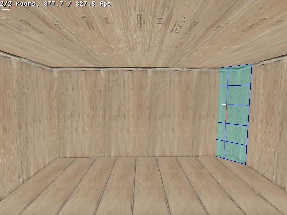
This way we'll have what is, for MaxED, a proper room structure, and
we can have all the example objects grouped to this, getting rid of the
red bounding boxes that surround ungrouped objects.
The Requirements
Boolean operations can only be performed with objects that meet these
requirements:
- The objects have to be on exactly the same level in the
hierarchy tree. A good way to get object A to the same hierarchy
level with object B is to first group A to be B's child, and then
lift it up one level: (in F5 mode) -click object A, press
"G" and click object B -click object A, and press SHIFT-G
- Both objects must have their polygons facing the same way:
in or out. As was briefly mentioned in the "Creating your first
level" -tutorial, in MaxED object's polygons can be pointed
either outwards for normal solid-looking objects, or inwards so that
they can be viewed from inside the object, which is how rooms are
done. Looking at an object in MaxED, it's easy to tell which way
it's polys are facing, unless the object's texture has been marked
dual-sided. A polygon whose texture has been marked dual-sided looks
the same from both sides. In this case you might want to disable the
dual-sidedness (right-click the texture in the materials menu and
remove the dual-sided -tick).
- At least one of the objects has to be static. You can not do
a Boolean operation on two dynamic objects.
The Operations
Booleaning is done in F5-mode by selecting one of the objects,
pressing U, S or I (for union, subtract or
intersect, respectively), and selecting the other object. In a Boolean
operation there are always two objects involved.
UNION - In a union operation, two objects are put together so
that from MaxED's point of view they become one single physical object.
Actually a more correct term would be "addition", since one of
the objects retains it's identity, and the other is added to that. Which
object's properties are used, depends on the order in which they are
selected in the operation, unless one of them is dynamic and the other
static - in that case the dynamic object's properties are always used.
The objects can be aligned in any way. If they intersect, the
intersecting parts of the objects are discarded. If they touch, the
touching parts of the surfaces are again removed for the same reason. If
the objects do not touch at all, nothing visible is done, the objects
will simply from thereon be handled as one object.
Example of a union between two objects that intersect.
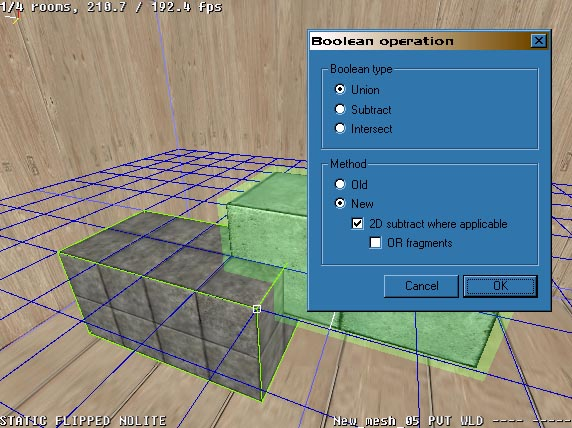
One of the objects is selected, "U" is pressed to specify a
union operation, and then the second object is selected. The Boolean
dialog pops up with the radio button selector ready on the union
operation. When OK is pressed, the operation is carried out.
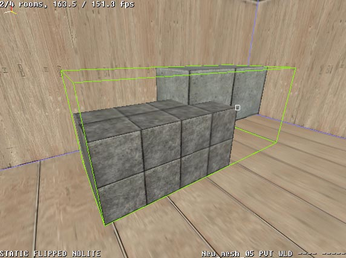
Now the objects have been merged together. When selected, the
bounding box surrounds the whole object to signify this.
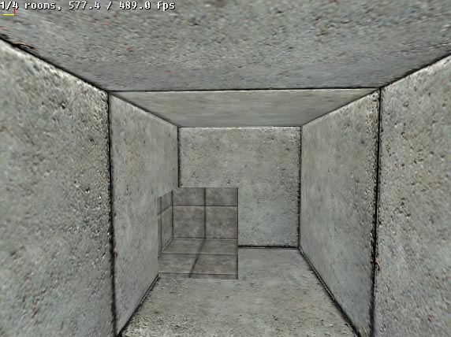
To illustrate how the extra intersecting geometry is dropped, in this
picture the resulting object's polygons are flipped (CTRL-F in F4-mode
when pointing at the object) to point inwards, and the object is
inspected from inside. You can see from one end of the object through to
the other.
Note that if the unioned objects do no touch at all, the union
operation can be undone by pointing at one of the objects in F4-mode and
pressing P. This will lead to the object being divided back into
two separate objects in the following manner:
| tempobject (static) --> |
tempobject01
(static) (pointed when P is pressed)
tempobject02 (static) |
| tempobject12 (static) --> |
tempobject13
(static) (pointed when P is pressed)
tempobject14 (static) |
| tempobject (dynamic) --> |
tempobject
(dynamic)
tempobject01 (static) (pointed when P is pressed) |
SUBTRACT - In subtraction, one of the objects functions as a
"negative", that is used to subtract geometry from the other.
The objects are aligned so that their intersection matches the piece
that needs to be removed.
Following the above, here the two objects are again aligned so that
they intersect each other from corners.
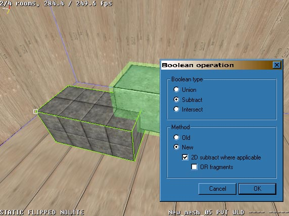
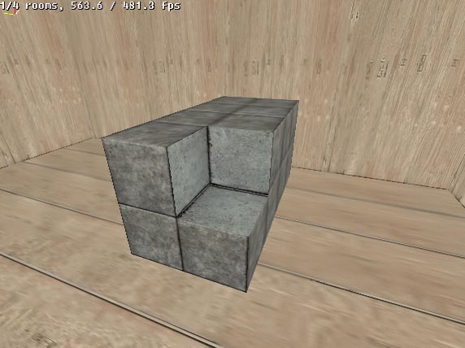
As you can see, the resulting cavity has the same texture with the
same settings on it's polygons, as the negative object that was used in
the operation. This is because these actually are the polygons (or
rather, parts of polygons) of the negative object, merged with the target
object.
INTERSECT - This is a mix of sorts between subtract and union.
Like in subtracting, the two objects have to intersect for the operation
to make sense, the only difference is the end result. The end result of
an intersect operation, like it's name suggests, is only those volumes
of the original objects that intersected each other. So, where in a
subtraction two objects are intersected to specify a piece to be removed
from the other, in an intersection everything _except_ that piece is
removed.
Here the objects have been modified slightly to illustrate the
workings of an intersection
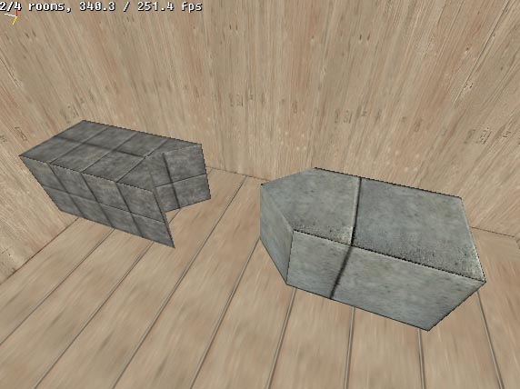
The arrowheaded object is lifted halfway on top of- and into the
arrowtailed object.
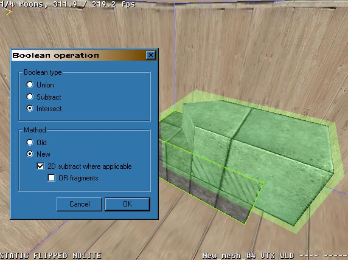
The result is an arrowheaded and -tailed object with half the height
of the original objects.
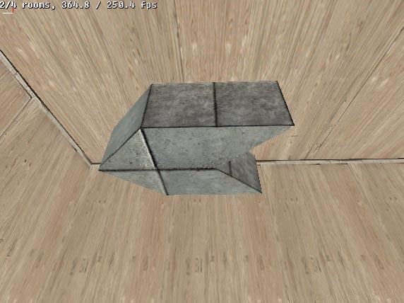
JOIN - As mentioned before, a join operation is not a true Boolean
operation. It does the same as a union but with a different twist: it
does not delete any geometry. As explained above, in a union all
intersecting geometry is discarded, in a join however the objects are
just clamped together keeping all the geometry intact. The objects can
also be separated again if necessary even if they touch (unlike in a
union). The only requirement is that the objects' vertices must not
meet, if this happens, separation will likely fail.
Joining is useful if you have many objects that would be better
handled as one, but you want to be able to separate them if necessary.
Depending on the case, joining might actually produce more optimized
geometry than a union. Like in the case of a plank pile, joining will
result in fewer polygons than a union since union splits the surfaces
but joining doesn't.
Lightmaps - You should know, that Boolean operations sometimes
destroy the lightmaps of those faces which are modified and re-rendering
might be required.
Stay out of trouble
Boolean operations are the key to any geometry in MaxED, and you are
likely to make them all the time. In a perfect world, this should always
work. However, MaxED uses floating point calculations and
representations with it's geometry, and although it is a very accurate
way, there are inevitably some limits. The unfortunate fact is, that with
this system you would need a computer with infinite accuracy and
infinite amount of memory to produce mathematically perfect results with
each Boolean operation. And if the result is not perfect, there has to
be some approximation and tolerances, and that means there can be
problems. There are a few things that you should try to do/avoid to stay
away from trouble.
KEEP BOOLEANS TO MINIMUM - Each Boolean operation forces the
system to rebuild the geometry, and may eventually cause those small
incrementing inaccuracies to turn into errors, sometimes even crashing.
A good policy is to always save your stuff before complex Boolean
operations
Do not get this wrong, as Max Payne the game is modeled almost fully
with MaxED, you know that there are complex objects and other geometry
that has required dozens of Boolean operations to create -- apparently
with success. So, do not be afraid of Booleans, but if you can minimize
the amount, it is usually preferable.
USE ABSOLUTE GRID TO AVOID INACCURACIES - As said, it is not advisable
to blindly trust that your geometry will maintain perfect integrity
after any Boolean operation. For instance, the floor that you think is
perfectly horizontal, might be microscopically tilted. Aligning the grid
to this polygon and creating new outside wall, for instance, would make
it tilted too. If you pull this wall very far up (this is a skyscraper, say, 300 meters tall), the tilting error builds
up and the upper edge of the wall could be already something like a quarter of a
centimeter away from the correct vertical position. Then you might Boolean
the wall and the floor together and further copy the whole thing
as an extension to the building another 300 meters up. If you now try to
Boolean the stuff together it's likely to not work, as the geometry does not "reach".
The way to prevent this is to use absolute (world) grid alignment
whenever possible, in which the grid can be aligned to three
different angles (one for each axis of the coordinate) and to a distance
from the world origo (the centerpoint of the space in which the map is
created) that is a multiple of the current grid size.
When absolute alignment is used to align the grid to a surface, it is
aligned as close to it as it can be within these parameters. This way,
whatever error might have been introduced to the geometry, it will not
get incremented. Absolute alignment is done like normal alignment but
with shift (in F4-mode, SHIFT-A). This will naturally encourage orthogonal
geometry, but with practice and clever usage, this is not a problem even
in more complex and slanted geometry cases.
FIX - Fixing (or "welding") makes MaxED to rethink
the triangulation of the object. Fixing is a good policy after/before
each Boolean, after splitting or joining faces and after moving/tilting
some faces -- Almost always when geometry has been extensively modified.
After Booleans, fixing usually reduces polygons and vertices.
Fixing is done in F5-mode by pointing at an object or a selection,
and pressing "F". The weld tolerance is given in meters, i.e.
0.000500 (half a millimeter) for example, which is the default value.
In addition to polygon rethink, the weld tolerance setting tells
MaxED to, within that selection, join together all vertices that are at
maximum the given distance (the "weld tolerance") apart from
each other.
If all vertices of a polygon are within the weld tolerance, that
polygon will be entirely deleted. "Optimizing" faces with high
fix values is not recommended policy. This might produce N-gons which
are not planar and that usually makes gaps/errors in geometry if you
make more Boolean operations. If you do not understand this brief
explanation, then simply a good rule-of-the-thumb is: do not change the
default fix value :-)
Fixing also creates new T-vertices, if necessary (we do not go into
detail now). In practice, it means that in some cases fixing
might also increase the polygon count if it serves to make the structure
more robust.
More advanced Boolean examples
At first, general modeling possibilities may seem a little limited in MaxED, but with
clever Boolean use, you can do very complex things. For instance, one
FAQ must be how to make round or sphere-like forms, as there are no such
primitives in MaxED.
To do complex things with Booleans, you have to learn to analyze your
goal and try to find clever ways to construct them. For instance, let's
say a barrel like form is your goal. Obvious solution would be to draw a
round shape on the grid and extrude that. Naturally, it is hard or
impossible to draw a round profile on a grid with steady edge length and
face angle, so you you would have to approximate a little. This would
already be rather OK barrel, but how to make a evenly rounded barrel
shape where every face and angle on the outer rim is equally sized? Lets
take a look...
Start by drawing a box on the grid, for instance 3x3 units (this will
be the radius of your sphere). Go to preferences (Ctrl-P) and select the
keyboard tilt angle to be some figure which can be evenly
multiplied to 360 degrees, here we use 15 degrees.
Use keyboard right-left cursors to tilt one face on the side. Check
the top-left picture from below to get the idea. Turn the grid so that
the plane goes through the edge which is active (red) in the this
picture. Copy the object and mirror it. Make an intersect (I) Boolean
operation between these two. The result should be a nice "slice of
a cake" as seen in the top-right picture. This a clever way to make
a this kind of object where you can be sure that both sides are tilted
exactly the angle that you intended and the radius of the forming sphere
can be anything you choose.
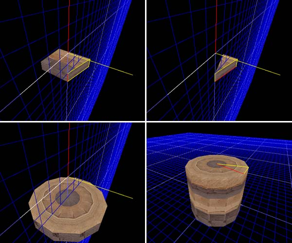
The rest should be easy: copy the slice and rotate it by keeping the
sharp point of the slice as you reference point. As your angle snap is
still 15 degrees, it is easy to keep the 2-key pressed (Y-axis) and
rotate the copy of the slice two clicks and make it meet the neighboring
piece exactly. Now you can make a Boolean union (U) between these two.
Then copy that piece again and carry on until you get a full nice round
figure with same sized edges and angles as seen in below-left image.
Remember to fix (F) the object from time to time between Booleans.
By extruding and texturing the shape you can create a pipe or a
barrel or what have you. Sometimes, it may be easier to texture the
first single slice before the Boolean operations to get the exact
repeating texture to each section (if that is your goal). Having texture
smoothing or even geometry smoothing with the aide of a polygroup should
give you better and smoother appearance (see advanced texturing
section).
A sphere may seem too hard to produce, but actually by
modifying the barrel idea a little bit, it is rather easy.
By turning the previous barrel horizontal and making another tall
15+15 degree "slice of a cake" you can create the basic form.
Place the objects as seen in the top-left image, and make a Boolean
intersection between them. This should produce a form as seen on
top-right image.
Now, as you did with the barrel, rotate this piece around and
make necessary Booleans and fixing to produce a nice, exact sphere as
seen below-left and, in wire-frame, below-right.
By starting with different initial angles like 7.5, 10, 6 etc. you
can create more/less detailed spheres or spheres with different
divisions. 15 degrees is rather good as the top and sides of the sphere
are straight and it is easy to fit this sphere to orthogonal world of
boxes and other items drawn by the grid which is what most of the level
geometry usually is.
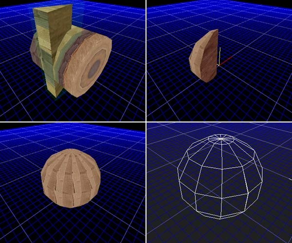
|